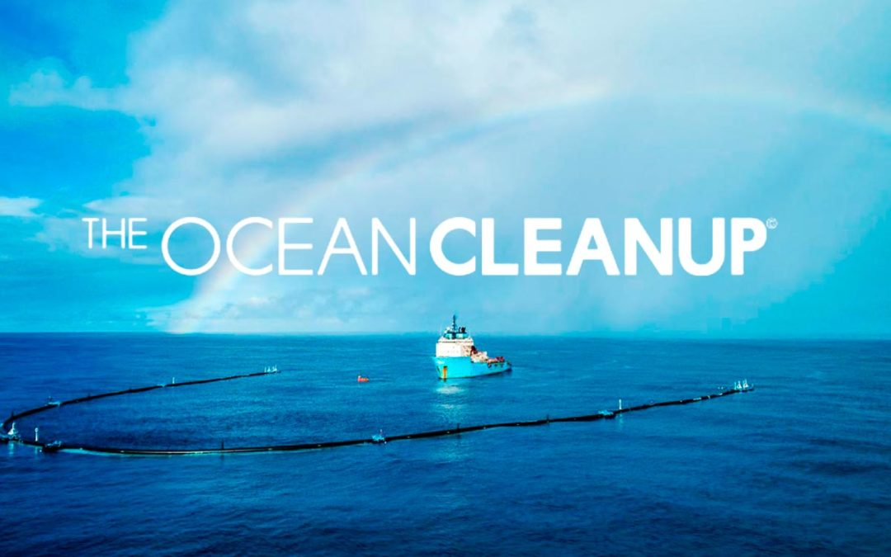

The Great Pacific Garbage Patch
This story map illustrates the Great Pacific Garbage Patch and other garbage patches in our oceans.Background

The Great Pacific Garbage Patch was discovered in 1997 by Charles Moore when he was sailing to his home in Los Angeles and noticed lots of debris. For a long time nobody really did anything about the patch so it started to accumulate.
One of the big contributors to ocean plastic is river plastic run off. So then there is a large amount of trash in the oceans. This trash gets sucked into gyres, which is like a spiral/vortex in the ocean. But in the middle of the gyres it is peaceful so the trash eventually ends up there, creating the patches of garbage in the ocean.
Statistics
"It is estimated that 1.15 to 2.41 million tonnes of plastic are entering the ocean each year from rivers." The estimated size of the area is 1.6 million square kilometers which is two times the size of Texas or three times the size of France.
Accumulation Zones

While the Great Pacific Garbage Patch is the most well there are four other accumulation zones that have started to form. The Great Pacific Garbage Patch is looked in the pacific halfway between Hawaii and California. The second zone is located between South Africa and Australia. The third in the South Pacific South America. The fourth in the South Atlantic on the other side of Sotuh America. The fifth and final zone is in the North Atlantic between North America and Europe.
Why Should You Care?

Besides the obvious reason to care about the environment that you are living in you should also care because of the bioaccumulation that occurs in the food chain. Bioaccumulation is when one something small like shrimp eats the plastics in the ocean. Then a slightly bigger acquatic animal eats many of them and so on. This happens all the way up the food chain to us, so eating fish or other acquatic animals equats to eating a decent bit of plastic. This is obviously bad because plastic is a made up of chemcicals and can be toxic to eat.
The Ocean Cleanup
Luckily the Ocean Cleanup is a company whose sole purpose is to clean the trash in the ocean, specifically focusing on the Great Pacific Garbage Patch. The founder is Boyan Slat, a then teenager from the Netherlands.